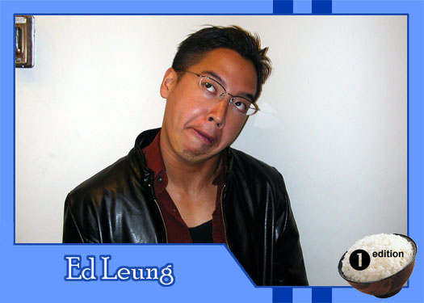

|
Why did you get involved with Theatre Rice? Because theatre is an art, and only through art can human attain perfection. Actually, just cuz Reggie dragged me along to audition. What do you hope to gain from TR? Sanity and memories. What do you like to do in your spare time? Think about everything. What are your favorite films or t.v. shows? Fight Club. What message would you give to the future generations of Theatre Rice? Reggie Panaligan is a great great man. |